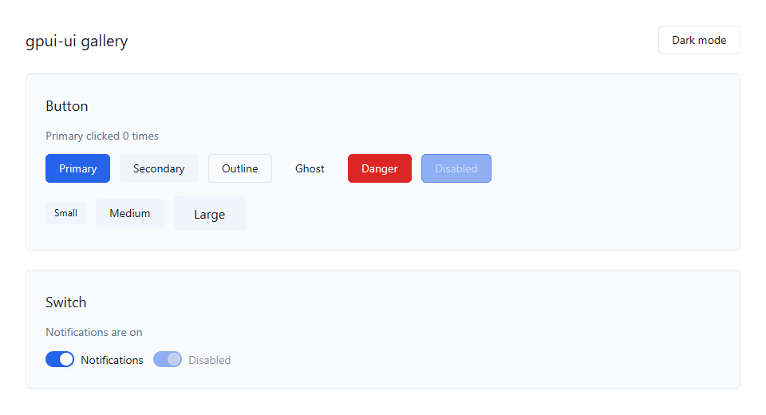

Button
Primary, secondary, outline, ghost and danger variants in three sizes, with hover, active and disabled states.
Buttons, switches and theme tokens for GPUI, the GPU-accelerated UI framework behind the Zed editor. Ported from familiar web designs, with light and dark themes and a gallery app you can drive from scripts.

story gallery, rendered offscreen by its automation server.Primary, secondary, outline, ghost and danger variants in three sizes, with hover, active and disabled states.
A controlled on/off toggle with an optional label. The owner keeps the value, like a controlled React input.
Light and dark color tokens mapped from CSS variables. Components never hard-code colors.
Add the crate from Git (it is not on crates.io yet):
[dependencies]
gpui-ui = { git = "https://github.com/lengoclongk59/gpui-ui" }Call gpui_ui::init once before opening a window, then use the
builders inside any view:
use gpui_ui::button::{Button, ButtonVariant};
use gpui_ui::switch::Switch;
Button::new("save")
.variant(ButtonVariant::Primary)
.label("Save")
.on_click(cx.listener(|this, _, _, cx| {
this.saves += 1;
cx.notify();
}));
Switch::new("notifications")
.label("Notifications")
.checked(self.notifications)
.on_change(cx.listener(|this, checked: &bool, _, cx| {
this.notifications = *checked;
cx.notify();
}));GPUI comes from the gpui-pre-* snapshot crates, pinned to
=0.3.12. Use the same snapshot in your application.
cargo run # opens the component gallery
cargo run -p story -- --automation # adds the JSON Lines automation serverThe automation server clicks, hovers and inspects components through GPUI's
real input path and renders screenshots without capturing the screen. The
cli-anything-gpui-ui harness wraps it in a command line for
scripts and AI agents.